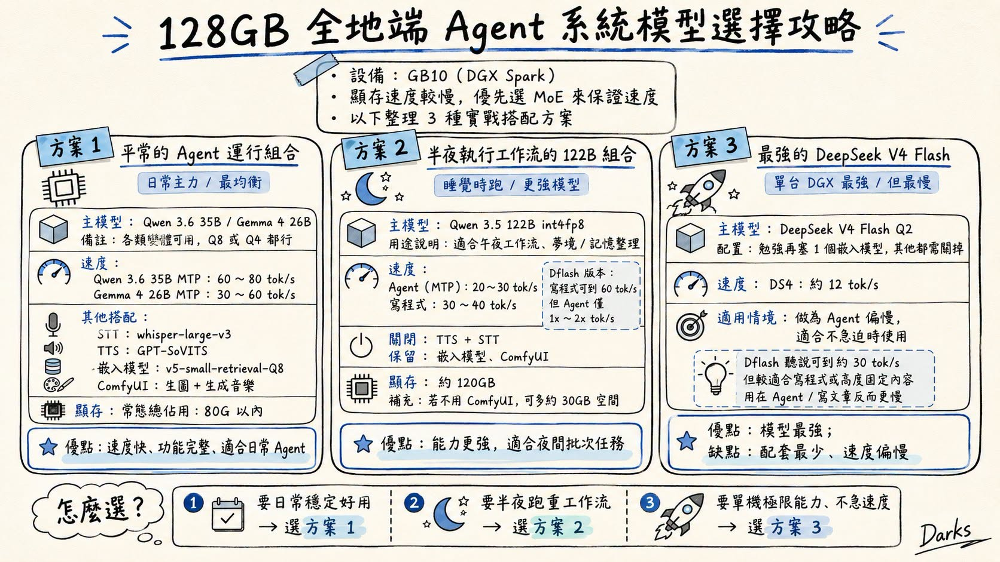

Facebook｜陳盟升：128GB 全地端 Agent 系統模型選擇攻略
來源是陳盟升（darkschen）在 Facebook 分享的「128GB 全地端 Agent 系統模型選擇攻略」。貼文描述他在 GB10 / DGX Spark 類 128GB 本機設備上，經過數個月全地端 Agent 運行後，整理出兩種主要平衡組合與一個極限方案：日常 Agent 用較快的 MoE / MTP 模型，夜間工作流用 122B 級模型，單機極限則嘗試 DeepSeek V4 Flash Q2。

公開 Facebook 內容
Facebook 分享連結解析後為 photo URL：`https://www.facebook.com/photo.php?fbid=1569317608163069&set=a.118972106530967&type=3`。頁面擷取時可見作者為陳盟升，發文約 2 小時，互動約 26 個心情、1 則留言、7 次分享；這些數字會隨時間變動。
貼文核心重點：
- 設備是 GB10 / DGX Spark，作者認為顯存速度較慢，約等於 RTX 5060 Ti，因此優先選 MoE 模型來保證速度。
- 日常 Agent 主模型使用 Qwen 3.6 35B 或 Gemma 4 26B 的變體，Q8 / Q4 皆可；搭配語音轉文字、TTS、RAG embedding 與 ComfyUI，常態顯存佔用 80GB 以內。
- 半夜批次工作流使用 Qwen 3.5 122B int4fp8；關閉 TTS / STT，保留 embedding 與 ComfyUI，顯存約 120GB 左右。
- 極限方案是 DeepSeek V4 Flash Q2；作者認為模型能力最強但速度慢，適合不急迫任務或不需要 ComfyUI 的情境。
- 貼文提到 OpenClaw 這類 agent 會把夢境與記憶整理放在午夜執行，可配合夜間工作流思路。
圖片 / OCR 描述
資訊圖標題為「128GB 全地端 Agent 系統模型選擇攻略」，上方摘要寫：
- 設備：GB10（DGX Spark）
- 顯存速度較慢，優先選 MoE 來保證速度
- 以下整理 3 種實戰搭配方案
三個方案如下：
方案 1：平常的 Agent 運行組合
定位為「日常主力 / 最均衡」。主模型是 Qwen 3.6 35B / Gemma 4 26B，各類變體可用，Q8 或 Q4 皆可。速度欄寫：Qwen 3.6 35B MTP 約 60–80 tok/s；Gemma 4 26B MTP 約 30–60 tok/s。
其他搭配包括：
- STT：whisper-large-v3（貼文原文寫 SST，本文按語音轉文字脈絡理解為 STT）
- TTS：GPT-SoVITS
- 嵌入模型：v5-small-retrieval-Q8
- ComfyUI：生圖 + 生成音樂
顯存欄寫常態總佔用 80G 以內。優點是速度快、功能完整、適合日常 Agent。
方案 2：半夜執行工作流的 122B 組合
定位為「睡覺時跑 / 更強模型」。主模型是 Qwen 3.5 122B int4fp8，用途為午夜工作流、夢境 / 記憶整理。速度欄寫：Agent（MTP）約 20–30 tok/s；寫程式約 30–40 tok/s。旁邊補充 DFlash 版本寫程式可到 60 tok/s，但 Agent 僅 1x–2x tok/s。
配置為關閉 TTS + STT，保留嵌入模型與 ComfyUI。顯存約 120GB；若不用 ComfyUI，可多約 30GB 空間。優點是能力更強，適合夜間批次任務。
方案 3：最強的 DeepSeek V4 Flash
定位為「單台 DGX 最強 / 但最慢」。主模型是 DeepSeek V4 Flash Q2，配置上勉強再塞一個嵌入模型，其他都需關掉。速度欄寫 DS4 約 12 tok/s；適用情境是 Agent 偏慢、適合不急迫時使用。補充說 DFlash 聽說可到約 30 tok/s，但較適合寫程式或高度固定內容，用在 Agent / 寫文章反而更慢。
底部「怎麼選？」總結：日常穩定好用選方案 1；半夜跑重工作流選方案 2；要單機極限能力、不急速度選方案 3。
官方來源與查核
NVIDIA 官方 DGX Spark 頁面將 DGX Spark 描述為由 NVIDIA GB10 Grace Blackwell Superchip 驅動的桌面型 agent computer / personal AI supercomputer，具備 128GB coherent unified system memory，官方稱可在桌面上跑 AI development / testing workloads 與最高約 200B 參數模型，並提供最高 1 petaFLOP FP4 AI performance。這支持貼文以「GB10 / DGX Spark / 128GB」作為本機大模型 Agent 平台的硬體背景。不過「顯存速度約等於 5060 Ti」是作者體感或社群比較，本文未找到 NVIDIA 官方這樣表述。
Hugging Face API 查核顯示以下模型或量化版本存在：
- `Qwen/Qwen3.6-35B-A3B`：公開模型，Apache-2.0，pipeline 為 image-text-to-text；本次查核時下載數約 630 萬。
- `unsloth/Qwen3.6-35B-A3B-MTP-GGUF`：Qwen3.6 35B 的 GGUF / MTP 量化版本，base model 指向 `Qwen/Qwen3.6-35B-A3B`。
- `google/gemma-4-26B-A4B-it-assistant` 與 `unsloth/gemma-4-26B-A4B-it-qat-GGUF`：Gemma 4 26B 系列與 GGUF / QAT 量化版本，支援多模態 / image-text-to-text 或 any-to-any 類型標籤。
- `Qwen/Qwen3.5-122B-A10B` 與 `unsloth/Qwen3.5-122B-A10B-GGUF`：Qwen3.5 122B 系列與 GGUF 量化版本，Apache-2.0。
- `deepseek-ai/DeepSeek-V4-Flash`：DeepSeek V4 Flash 公開模型，MIT；model card 搜尋結果描述其為 DeepSeek-V4 preview 系列的 MoE 模型之一，284B total / 13B activated，支援長上下文。
- `huihui-ai/Huihui-DeepSeek-V4-Flash-abliterated-ds4-GGUF`：DeepSeek V4 Flash 的 DS4 / GGUF 相關社群量化版本，base model 指向 `deepseek-ai/DeepSeek-V4-Flash`。
工具層查核：`openai/whisper-large-v3` 是 Hugging Face 上的 Whisper large-v3 ASR 模型；`RVC-Boss/GPT-SoVITS` 是公開 GitHub repo，描述為少量語音資料也能訓練 / few-shot voice cloning 的 TTS 系統；`Comfy-Org/ComfyUI` 是公開 GitHub repo，描述為 diffusion model GUI、API 與 graph / node backend。OpenClaw 方面，`openclaw/openclaw` 是公開 GitHub repo；Brave Search 另找到 `RogueCtrl/OpenClawDreams` 與 `LeoYeAI/openclaw-auto-dream` 等與「dream / memory consolidation」相關的 OpenClaw plugin / 專案，可支持貼文提到的夜間記憶整理脈絡。
NVIDIA Developer Forums 搜尋結果可找到單台 DGX Spark / GB10 上跑 `Qwen3.5-122B-A10B` 與 DFlash / speculative decoding 的討論，顯示社群正在針對 Spark 優化 122B 級模型的 token/s。不過本文沒有重現作者的本機 benchmark；貼文中的 60–80、30–60、20–30、12 tok/s 等速度應視為作者設備、引擎、量化格式、上下文長度、MTP / DFlash 設定與工作負載下的實測或社群經驗，不是官方保證。
實務判讀
這則貼文的價值在於把「128GB 本機 Agent」從單一大模型跑分，轉成實際排程與資源配置問題。日常互動需要速度、語音、RAG 與多媒體工作流，因此選 26B–35B MoE / MTP 模型更平衡；夜間批次任務可以犧牲即時性，換 122B 級模型做更深的整理、程式或反思；極限推理則可以短時間關掉周邊服務，讓 DeepSeek V4 Flash 取得更多記憶體空間。
對想自建全地端 Agent 的人，這篇可作為選型思路，而不是照抄參數。真正落地時，還要把推理引擎、GGUF / FP8 / Q4 / Q8 格式、KV cache 長度、embedding 常駐量、STT / TTS 佔用、ComfyUI workflow、散熱與排程一起測。尤其 Agent 任務通常不是純 decode benchmark；工具呼叫、RAG、長上下文與多模態輸入會讓 tok/s 與體感速度不同。
補充邊界
- 本文沒有登入作者設備、DGX Spark 論壇帳號或重跑 benchmark；所有 tok/s 與顯存佔用數字都標註為作者 / 社群經驗，不寫成官方效能。
- 「顯存速度約等於 5060 Ti」未從 NVIDIA 官方頁確認，保留為作者比較。
- `Qwen 3.6`、`Gemma 4`、`DeepSeek V4` 等模型與量化版本更新很快；下載數、likes、可用量化與推理支援會隨時間變動。
- 若要照這篇建置本機 Agent，建議先用小上下文、短任務、固定 prompt 做 A/B 測，再逐步加入 STT、TTS、embedding、ComfyUI 與排程，避免一次塞滿 128GB 後難以定位瓶頸。